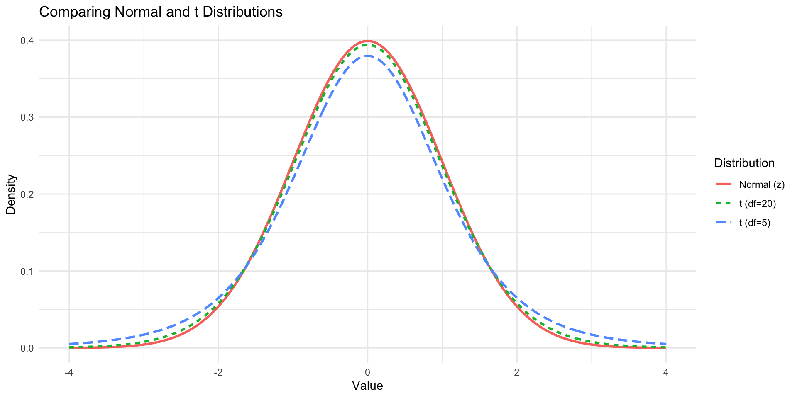
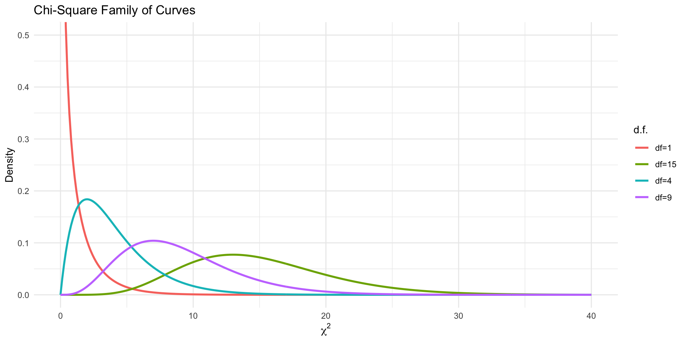

[1] -1.64[1] -1.96[1] -2.58Chapter 7: Confidence Intervals and Sample Size
Shih Chien University
2026-06-04
Sections covered:
Estimation is the process of using sample data to approximate the value of a population parameter. Because collecting data from an entire population is usually impractical, we rely on sample statistics — estimators — to infer what the population looks like.
This chapter introduces two types of estimates: point estimates (a single value) and interval estimates (a range of plausible values). It also addresses a critical practical question: how large a sample do we need?
Point Estimate
A point estimate is a single numerical value used to estimate a population parameter. The best point estimate of the population mean μ is the sample mean \bar{X}.
Interval Estimate
An interval estimate is a range of values used to estimate a parameter. It acknowledges that the sample mean will differ from μ due to sampling variability.
A point estimate alone gives no sense of accuracy. An interval estimate — paired with a confidence level — tells us how reliable the estimate is.
Three Properties of a Good Estimator
The sample mean \bar{X} satisfies all three properties — it is the preferred estimator of μ.
Confidence Level
The confidence level is the probability that the interval estimate will contain the true population parameter, assuming the estimation process is repeated many times.
Confidence Interval
A confidence interval is a specific interval estimate of a parameter, determined from sample data and a chosen confidence level. Common levels: 90%, 95%, 99%.
Higher confidence → wider interval. There is always a trade-off between precision and certainty.
CI Formula (σ Known)
\bar{X} - z_{\alpha/2}\left(\frac{\sigma}{\sqrt{n}}\right) < \mu < \bar{X} + z_{\alpha/2}\left(\frac{\sigma}{\sqrt{n}}\right)
| Confidence Level | z_{\alpha/2} |
|---|---|
| 90% | 1.65 |
| 95% | 1.96 |
| 99% | 2.58 |
The term E = z_{\alpha/2}(\sigma/\sqrt{n}) is the margin of error.
Assumptions:
Random sample;
n ≥ 30, OR population is normally distributed if n < 30.
Find the z value in R
Example 7-1
A researcher wants to estimate the average number of days it takes to sell a Chevrolet Aveo. A sample of 50 cars had a mean time of 54 days on the dealer’s lot. Assume the population standard deviation is 6.0 days. Find the best point estimate of the population mean and the 95% confidence interval.
Solution (Mathematical):
Point estimate: \bar{X} = 54 days
54 - 1.96\left(\frac{6.0}{\sqrt{50}}\right) < \mu < 54 + 1.96\left(\frac{6.0}{\sqrt{50}}\right) 54 - 1.7 < \mu < 54 + 1.7 \mathbf{52.3 < \mu < 55.7}
Example 7-2
A survey of 30 emergency room patients found an average waiting time of 174.3 minutes. The population standard deviation is known to be 46.5 minutes. Find the best point estimate and the 99% confidence interval of the true mean waiting time.
Solution (Mathematical):
174.3 - 2.58\left(\frac{46.5}{\sqrt{30}}\right) < \mu < 174.3 + 2.58\left(\frac{46.5}{\sqrt{30}}\right) 174.3 - 21.9 < \mu < 174.3 + 21.9 \mathbf{152.4 < \mu < 196.2} —
Point estimate: 174.3 99% CI: ( 152.4 , 196.2 )Interpretation: We are 99% confident that the true mean ER waiting time is between 152.4 and 196.2 minutes.
For confidence levels other than 90%, 95%, or 99%, find z_{\alpha/2} as follows:
Example 7-3
The following data represent the assets (in millions of dollars) for a sample of 30 credit unions in southwestern Pennsylvania. Find the 90% confidence interval of the mean. Assume σ = 14.405.
12.23, 16.56, 4.39, 2.89, 1.24, 2.17, 13.19, 9.16, 1.42, 73.25, 1.91, 14.64, 11.59, 6.69, 1.06, 8.74, 3.17, 18.13, 7.92, 4.78, 16.85, 40.22, 2.42, 21.58, 5.01, 1.47, 12.24, 2.27, 12.77, 2.76
assets <- c(12.23, 16.56, 4.39, 2.89, 1.24, 2.17, 13.19, 9.16, 1.42,
73.25, 1.91, 14.64, 11.59, 6.69, 1.06, 8.74, 3.17, 18.13,
7.92, 4.78, 16.85, 40.22, 2.42, 21.58, 5.01, 1.47, 12.24,
2.27, 12.77, 2.76)
xbar <- mean(assets); sigma <- 14.405; n <- length(assets)
z <- qnorm(0.95) # 90% CI → alpha/2 = 0.05
E <- z * sigma / sqrt(n)
cat("X-bar =", round(xbar, 3), "\n")X-bar = 11.091 90% CI: ( 6.765 , 15.417 )Answer: 6.752 < \mu < 15.430 million. We are 90% confident that the mean assets of all credit unions in this region fall between $6.752M and $15.430M.
Minimum Sample Size Formula
n = \left(\frac{z_{\alpha/2} \cdot \sigma}{E}\right)^2
where E is the desired margin of error. Always round up to the next whole number.
What you need to know: - The desired confidence level (determines z_{\alpha/2}) - The population standard deviation σ (or an estimate from a prior study) - The acceptable margin of error E
Example 7-4
A scientist wants to estimate the average depth of a river. She wants to be 99% confident that the estimate is accurate within 2 feet. A previous study found σ = 4.33 feet. Find the minimum sample size needed.
Solution (Mathematical):
z_{\alpha/2} = 2.58, E = 2, \sigma = 4.33
n = \left(\frac{2.58 \times 4.33}{2}\right)^2 = \left(\frac{11.17}{2}\right)^2 = (5.585)^2 = 31.2 \rightarrow \mathbf{n = 32}
[1] 31.20004[1] 32Answer: The scientist needs at least 32 measurements to achieve the desired precision with 99% confidence.
When σ is unknown, the sample standard deviation s is used as a substitute. However, this introduces additional uncertainty — especially for small samples. The appropriate distribution is the Student’s t distribution.
Characteristics of the t Distribution
Similar to the normal distribution: 1. Bell-shaped and symmetric about the mean 2. Mean, median, and mode all equal 0 3. The curve never touches the x-axis
Differences from the normal: 1. Variance is greater than 1 (heavier tails) 2. It is a family of curves indexed by degrees of freedom (d.f.) 3. As d.f. increases, the t distribution approaches the standard normal
x <- seq(-4, 4, length.out = 300)
df_plot <- data.frame(
x = rep(x, 3),
y = c(dnorm(x), dt(x, df = 5), dt(x, df = 20)),
dist = rep(c("Normal (z)", "t (df=5)", "t (df=20)"), each = 300)
)
ggplot(df_plot, aes(x, y, color = dist, linetype = dist)) +
geom_line(linewidth = 1) +
labs(title = "Comparing Normal and t Distributions",
x = "Value", y = "Density", color = "Distribution", linetype = "Distribution") +
theme_minimal()
Degrees of Freedom
For a confidence interval for the mean: d.f. = n − 1
The degrees of freedom specify which t curve to use. In R: qt(p, df = n-1)
CI Formula (σ Unknown)
\bar{X} - t_{\alpha/2}\left(\frac{s}{\sqrt{n}}\right) < \mu < \bar{X} + t_{\alpha/2}\left(\frac{s}{\sqrt{n}}\right)
where t_{\alpha/2} is from Table F with d.f. = n − 1.
Assumptions: (1) Random sample; (2) n ≥ 30, OR population is approximately normally distributed if n < 30.
Decision Rule
| Condition | Use |
|---|---|
| σ known, n ≥ 30 | z and σ |
| σ known, n < 30 (normal pop.) | z and σ |
| σ unknown, n ≥ 30 | t and s |
| σ unknown, n < 30 (normal pop.) | t and s |
Example 7-5
Find the t_{\alpha/2} value for a 95% confidence interval when the sample size is n = 22.
Solution (Mathematical):
d.f. = 22 − 1 = 21. Look up 95% column in Table F at row 21.
t_{\alpha/2} = 2.080
[1] 2.079614Key Rule
For a confidence interval, always use qt(1 - alpha/2, df = n-1). For a 95% CI: qt(0.975, df = n-1).
Example 7-6
Ten randomly selected people reported their nightly sleep duration. The sample mean was 7.1 hours and the standard deviation was 0.78 hour. Find the 95% confidence interval of the mean. Assume the variable is normally distributed.
Solution (Mathematical):
σ unknown, n = 10 < 30 → use t distribution. d.f. = 9, t_{\alpha/2} = 2.262
7.1 - 2.262\left(\frac{0.78}{\sqrt{10}}\right) < \mu < 7.1 + 2.262\left(\frac{0.78}{\sqrt{10}}\right) 7.1 - 0.56 < \mu < 7.1 + 0.56 \mathbf{6.54 < \mu < 7.66}
Example 7-7
The data below represent the number of home fires started by candles each year over a 7-year period. Find the 99% confidence interval for the mean number of candle-caused home fires per year.
5460, 5900, 6090, 6310, 7160, 8440, 9930
n = 7 X-bar = 7041.4 s = 1610.3 t_alpha/2 (df=6) = 3.707 99% CI: ( 4785 , 9297.9 )Answer: 4785.2 < \mu < 9297.6 fires per year. We are 99% confident that the true mean falls in this range, based on 7 years of data.
Notation for Proportions
\hat{p} = \frac{X}{n} \quad \text{(sample proportion)} \qquad \hat{q} = \frac{n-X}{n} = 1 - \hat{p}
where X = number of units in the sample with the characteristic of interest, n = sample size.
The population proportion is denoted p (and q = 1 − p).
The sample proportion \hat{p} is an unbiased, consistent, and relatively efficient estimator of p. It also serves as the best point estimate of p.
Confidence interval formula: \hat{p} - z_{\alpha/2}\sqrt{\frac{\hat{p}\hat{q}}{n}} < p < \hat{p} + z_{\alpha/2}\sqrt{\frac{\hat{p}\hat{q}}{n}}
Condition: n\hat{p} \geq 5 and n\hat{q} \geq 5
Example 7-8
In a recent survey of 150 households, 54 had central air conditioning. Find \hat{p} and \hat{q}, where \hat{p} is the proportion of households with central air conditioning.
Solution (Mathematical):
\hat{p} = \frac{X}{n} = \frac{54}{150} = 0.36 = 36\% \hat{q} = \frac{n - X}{n} = \frac{150 - 54}{150} = \frac{96}{150} = 0.64 = 64\%
p-hat = 0.36 q-hat = 0.64 This gives the best point estimate: 36% of households have central air conditioning.
Example 7-9
A survey of 1404 respondents found that 323 students paid for their education using student loans. Find the 90% confidence interval for the true proportion of students who fund their education through student loans.
Solution:
\hat{p} = 323/1404 = 0.230, \hat{q} = 0.770, z_{\alpha/2} = 1.65
0.230 \pm 1.65\sqrt{\frac{(0.230)(0.770)}{1404}} = 0.230 \pm 0.019 \mathbf{0.211 < p < 0.249}
p-hat = 0.23 90% CI: ( 0.212 , 0.249 )Interpretation: We are 90% confident that between 21.1% and 24.9% of students pay for college via student loans.
Example 7-10
A survey of 1721 people found that 15.9% purchase religious books at a Christian bookstore. Find the 95% confidence interval for the true proportion of people who purchase religious books there.
Solution:
\hat{p} = 0.159, \hat{q} = 0.841, z_{\alpha/2} = 1.96
0.159 \pm 1.96\sqrt{\frac{(0.159)(0.841)}{1721}} = 0.159 \pm 0.017 \mathbf{0.142 < p < 0.176}
95% CI: ( 0.142 , 0.176 )Answer: We are 95% confident the true percentage is between 14.2% and 17.6%.
Minimum Sample Size for a Proportion
n = \hat{p}\hat{q}\left(\frac{z_{\alpha/2}}{E}\right)^2
Always round up to the next whole number.
Example 7-11
A researcher wishes to estimate with 95% confidence the proportion of people who own a home computer, to within 2% of the true proportion. A previous study showed that 40% had a computer at home. Find the minimum sample size needed.
Solution:
z_{\alpha/2} = 1.96, E = 0.02, \hat{p} = 0.40, \hat{q} = 0.60
n = (0.40)(0.60)\left(\frac{1.96}{0.02}\right)^2 = (0.24)(9604) = 2304.96 \rightarrow \mathbf{n = 2305}
Example 7-12
A researcher wishes to estimate the percentage of M&M’s that are brown. He wants to be 95% confident and accurate within 3% of the true proportion. No prior estimate of \hat{p} is available. Find the minimum sample size.
Solution:
Since no prior \hat{p} is known, use \hat{p} = \hat{q} = 0.5
n = (0.5)(0.5)\left(\frac{1.96}{0.03}\right)^2 = (0.25)(4268.4) = 1067.1 \rightarrow \mathbf{n = 1068}
[1] 1067.111[1] 1068Key Rule
When \hat{p} is unknown, always use \hat{p} = 0.5 — it produces the largest possible sample size, ensuring sufficient precision regardless of the true proportion.
Confidence intervals for variances and standard deviations require a different distribution — the chi-square (χ²) distribution.
Chi-Square Distribution Properties
Key difference from z and t: The chi-square distribution is not symmetric, so two separate critical values (\chi^2_{\text{right}} and \chi^2_{\text{left}}) are needed.
x <- seq(0, 40, length.out = 300)
df_plot <- data.frame(
x = rep(x, 4),
y = c(dchisq(x, 1), dchisq(x, 4), dchisq(x, 9), dchisq(x, 15)),
df = rep(c("df=1","df=4","df=9","df=15"), each = 300)
)
ggplot(df_plot, aes(x, y, color = df)) +
geom_line(linewidth = 1) +
coord_cartesian(ylim = c(0, 0.5)) +
labs(title = "Chi-Square Family of Curves",
x = expression(chi^2), y = "Density", color = "d.f.") +
theme_minimal()
Confidence Interval for a Variance
\frac{(n-1)s^2}{\chi^2_{\text{right}}} < \sigma^2 < \frac{(n-1)s^2}{\chi^2_{\text{left}}} d.f. = n − 1
Confidence Interval for a Standard Deviation
\sqrt{\frac{(n-1)s^2}{\chi^2_{\text{right}}}} < \sigma < \sqrt{\frac{(n-1)s^2}{\chi^2_{\text{left}}}}
Assumptions: (1) Random sample; (2) Population must be normally distributed.
Finding critical values: Use qchisq() in R. For a 95% CI with d.f. = n − 1: - \chi^2_{\text{right}}: qchisq(0.975, df = n-1) - \chi^2_{\text{left}}: qchisq(0.025, df = n-1)
Example 7-13
Find the values \chi^2_{\text{right}} and \chi^2_{\text{left}} for a 90% confidence interval when n = 25.
Solution (Mathematical):
d.f. = 25 − 1 = 24
chi-sq right = 36.415 chi-sq left = 13.848 Caution
Note the counterintuitive naming: \chi^2_{\text{right}} is the larger value used in the denominator of the lower bound, while \chi^2_{\text{left}} is the smaller value used in the denominator of the upper bound.
Example 7-14
Find the 95% confidence interval for the variance and standard deviation of the nicotine content of cigarettes manufactured, given that a sample of n = 20 cigarettes has a standard deviation of s = 1.6 milligrams.
Solution (Mathematical):
d.f. = 19; 95% CI → \chi^2_{\text{right}} = 32.852, \chi^2_{\text{left}} = 8.907
\frac{(19)(1.6)^2}{32.852} < \sigma^2 < \frac{(19)(1.6)^2}{8.907} \frac{48.64}{32.852} < \sigma^2 < \frac{48.64}{8.907} \implies \mathbf{1.5 < \sigma^2 < 5.5}
\sqrt{1.5} < \sigma < \sqrt{5.5} \implies \mathbf{1.2 < \sigma < 2.3}
chi-sq right = 32.852 chi-sq left = 8.907 95% CI for variance: ( 1.5 , 5.5 )95% CI for std dev: ( 1.2 , 2.3 )Example 7-15
The data below represent the prices (in dollars) of adult single-day ski lift tickets at a sample of nationwide ski resorts. Find the 90% confidence interval for the variance and standard deviation. Assume the variable is normally distributed.
59, 54, 53, 52, 51, 39, 49, 46, 49, 48
n = 10 s² = 28.2 s = 5.31 chi-sq right = 16.919 chi-sq left = 3.325 90% CI for variance: ( 15 , 76.4 )90% CI for std dev: ( 3.87 , 8.74 )Answer: 15.0 < \sigma^2 < 76.3; 3.87 < \sigma < 8.73 dollars.
| Parameter | Formula | R Function |
|---|---|---|
| Mean (σ known) | \bar{X} \pm z_{\alpha/2}(\sigma/\sqrt{n}) | qnorm(1-alpha/2) |
| Mean (σ unknown) | \bar{X} \pm t_{\alpha/2}(s/\sqrt{n}) | qt(1-alpha/2, df=n-1) |
| Sample size (mean) | n = (z_{\alpha/2} \cdot \sigma / E)^2 | ceiling(...) |
| Proportion | \hat{p} \pm z_{\alpha/2}\sqrt{\hat{p}\hat{q}/n} | prop.test() |
| Sample size (proportion) | n = \hat{p}\hat{q}(z_{\alpha/2}/E)^2 | ceiling(...) |
| Variance | (n-1)s^2/\chi^2_R < \sigma^2 < (n-1)s^2/\chi^2_L | qchisq(...) |
Key Takeaways
Copyright notice. These teaching materials have been adapted from Bluman, A. G. (2011). Elementary statistics: A step by step approach (8th ed.). McGraw-Hill. All rights are reserved by the original authors and publishers.
Non-commercial use only. These materials are strictly intended for educational purposes and must not be used for commercial gain or profit.
Proper attribution. Any reproduction, distribution, or use of these materials must provide proper attribution to the original source.

Elementary Statistics: A Step by Step Approach